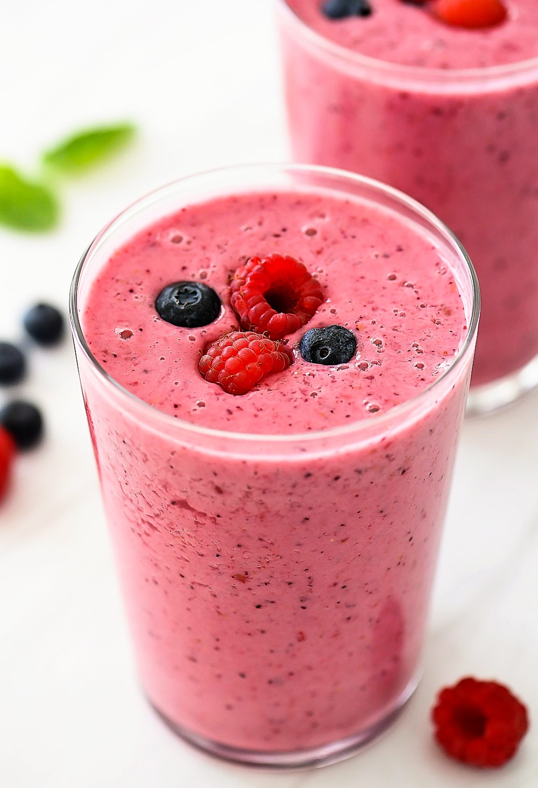

Almond Berry Smoothie

Description
Almond milk and almond butter are the star ingredients in this berry smoothie for a nutritious,
on-the-go meal that is vegan and paleo-friendly.
Ingredients
- 1 cup frozen blueberries
- 1 banana
- ½ cup almond milk
- 1 tablespoon almond butter
- water as needed
Steps
- Combine blueberries, banana, almond milk,
and almond butter in a blender; blend until smooth,
adding water for a thinner smoothie.
- Add some berries to decorate and Enjoy!
Home